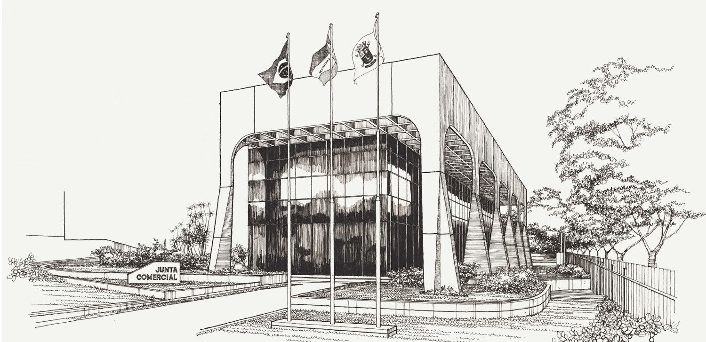

Na década de 90,a autarquia ganha nova sede - esta com amplas dependências, na Avenida Nossa Senhora da Penha e adquirida com recursos próprios.
Obra do famoso arquiteto cachoeirense Bebeto Vivácqua, o projeto é um dos marcos arquitetônicos da cidade, ao lado da Prefeitura de Vitória, do Palácio do Café e da Câmera de Vereadores de Vitória.
| O prédio é envolvido por uma estrutura em concreto formada por pilares piramidais, que sustentam uma moldura de caixotões vazados na parte superior das fachadas, proporcionando sombreamento aos pavimentos. A repetição de pilares e extrema leveza são parte da caracterização da construção. Essa solução permitiu a utilização de um pano de vidro nas fachadas, por reduzir a incidência de sol no interior do edifício. |

Projeto da nova sede na Reta da Penha |
AJucees ganha uma nova sede, moderna e com amplas dependências, localizada na avenida Nossa Senhora da Penha, projetada pelo arquiteto Bebeto Vivácqua.